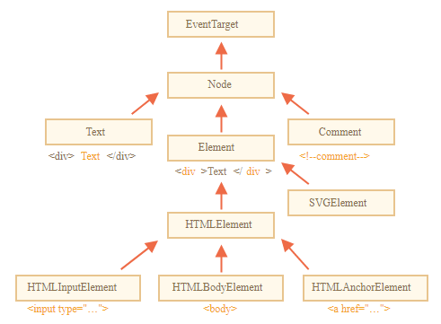

DOM YUMRU ÖZELLÝKLERÝ
DOM YUMRU ÖZELLÝKLERÝ
Paragraf

M.Nihat Yavaþ
Bu bölümlerin hiçbiri görünmez
Zira "hidden" ile gizlenmiþ vasýflýdýr.
JavaScript bu elemana "hidden" ile görünmezlik özelliði atamýþtýr.
Görünüp kaybolan div bölüm elemaný
- Liste 1
- Liste 1.1
- Liste 1.1.1
- Liste 2
- Liste 2.1
- Liste 2.1.1
- Liste 3
- Liste 3.1
- Liste 3.1.1